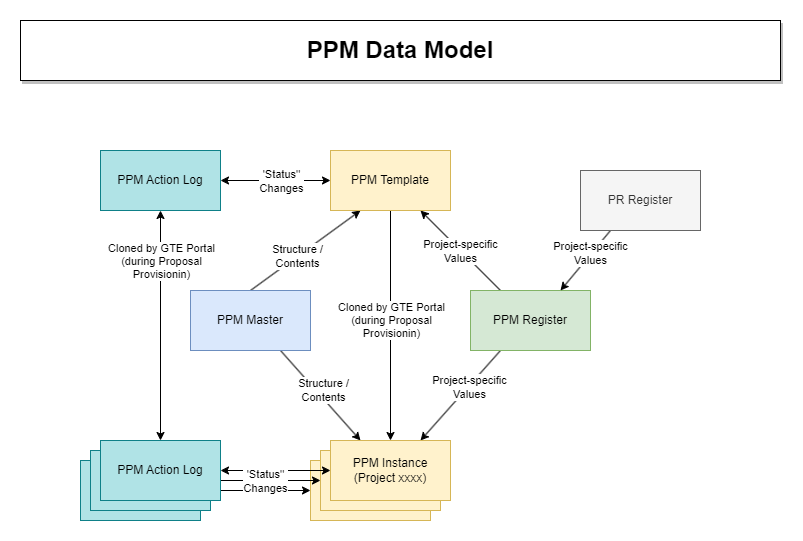

Dynamic PPM#
The Dynamic PPM is a system that defines the PPM contents in a common (PPM Master) sheet and automatically updates all PPM Instances whenever a change to the PPM Master is made. This allows PPM changes to be made and applied retrospectively to all existing PPM Instances. This will alleviate the situations with multiple versions of the PPM sheet.
Glossary#
| Term | Definition |
|---|---|
| PPM Master | Single sheet (1000_PPM_Master) which defines the overall structure and contents of the PPM Instances. Change to this sheet is automatically reflected in all PPM Instance sheets. |
| PPM Register | Single sheet (1000_PPM_Register) that contains variable data related to each individual project (each row in this sheet relates to a specific project). This data is then used in individual PPM Instances. For each new PPM Instance, a row in the PPM Register for the corresponding Project ID must exist. |
| PPM Documentation | Single sheet (1000_PPM_Documentation) that contains some of the general definitions for the Dynamic PPM system, such as section names, rules, parameters etc. |
| PPM Template | A template sheet that is used to create a PPM Instance by creating a copy for a specific project. This is done by GTE Portal by creating a project-specific copy of a template PPM Folder during Proposal Provisioning. |
| PPM Instance | Specific PPM sheet instance for particular project. It is created during proposal provisioning as a copy of the PPM Template. |
| PPM Item | Individual row in the PPM Instance, corresponding to task to be completed by assigned individual. |
| PPM Action Log | Helper sheet that is created for each project by GTE Portal during Proposal Provisioning. It is located in the PPM Folder, in the _System subfolder. It contains list of all “actions” in the respective project PPM Instance, where “action” means change of a PPM Item Status value. This is used to store the completion status of individual PPM Items and thus allow insertion/deletion of PPM Items in the PPM Master. |
| PPM Folder | Project-specific folder in the PPM workspace, containing all sheets related to the project's PPM, i.e. PPM Instance, PPM Action Log and PPM for Change Management |
| Section | PPM Items list is broken down into sections, with each section corresponding to a specific project phase. PPM Items in the section become active only when the section is active. Status names of each section is defined in the PPM Documentation sheet (Name 1 indicating status of the section when in progress, Name 2 indicating status when completed). |
| Rule | Rules are conditions that, when “applied” to the PPM Item, must be fulfilled for the PPM Item to become active in the particular section. Rule applicability is defined in the PPM Master sheet, whereas the actual rule value (true or false) is evaluated in the corresponding PPM Register row. Rules definition is contained in the PPM Documentation sheet. |
| Base Date | Specific dates used in the PPM Instance to calculate target date for each individual PPM Item. PPM Master defines target date for each PPM Item as a Base Date plus delay. Base Dates for each PPM Instance are evaluated in the PPM Register sheet. |
| Parameter | Arbitrary values that can be used in the definition if the PPM Item in the PPM Master sheet. For instance, it can indicate the SharePoint site name to be used. The Parameter, if defined, will be appended to the PPM Item text in the Action/Details column. The parameters are evaluated in the PPM Register. |
| Task Active | Checkbox column in the PPM Instance that indicates (when ticked) that the respective PPM Item (i.e. task) is to be completed. For the task to become active, the following has to become TRUE: "Section active" AND "Rule is non applicable OR (Rule is applicable AND Rule Status is True)" AND "PPM Item predecessor is completed" |
The following schematic illustrates the interrelations between individual components of the Dynamic PPM system:

Important
All PPM Master changes MUST follow the agreed procedure and MUST be properly documented. The steps to achieve each of these requirements are described in this section.
PPM Provisioning#
Portal will look for within the 0000 - PM Framework (Restricted) Workspace, for a folder named [TEMPLATE] PPM_Template. A copy of this folder will be made and placed within 1000 - Project Process Management.
This folder will be rename to the usual Project Name convention - Pxxxx_ClientName-ProjectName. Within this folder the PPM template is to reside with the name [TEMPLATE] PPM_Template.
Portal will look for this Smartsheet, rename the sheet to xxxx_PPM. It will also look for a field Project ID within the Sheet Summary and update accordingly.
PPM Master Change Procedures#
Adding New Rows#
Warning
Rows can be added to PPM Master and applied to all existing PPM Instances. In order to do so, it is crucial that the below steps are followed to ensure the referential integrity between Dynamic PPM system components is maintained.
Important
When executing the below procedure, DO NOT save the PPM Master sheet until you are instructed to do so!
- Check the _PPMServiceReport – Manual Alignment report and make sure all rows in the column
Manual Alignment Triggerare unticked. - Open the PPM Master sheet.
- Either Insert a new row, or Copy/Paste an existing row to be used as a basis, to the intended position in the sheet.
- Define the Action/Details column.
-
If applicable, apply one or multiple parameter(s) in the Parameters column. Either use one of the existing parameters (as defined in PPM Documentation sheet), or create a new parameter, using next available spare one:
- Update Parameter definition in the PPM Documentation sheet.
- In PPM Register, define a new column formula to evaluate the new parameter in column, corresponding to the new parameter (Param 1 – Param 15). Save this sheet.
- Update the Parameters column for the newly added row in the PPM Master sheet accordingly .
-
Define assignee for the new item in the ‘Assigned To’ column. Select one of the pre-defined roles. The actual assignment for all roles (including Spare 1 and Spare 2) is to be done in the PPM Register sheet, following similar process as mentioned in the item 3 above.
- Define Predecessors for the new item.
- Define Target Date Base for the new item, selecting one of pre-defined base dates. In case the spare date is selected, it’s actual value is to be defined in the PPM Register sheet following similar process as mentioned in the item 3 above.
- Define Target Date Delay.
-
Indicate if any of the rules does apply to the newly added item. In case the new spare rule is being used for this purpose, similar process as mentioned in the item 5 above is to be followed.
Important
Even though Master PPM changes are completed at this point, DO NOT save PPM Master yet!
-
Disable all PPM notifications via a PPM Register sheet by ticking the Sheet Summary checkbox
Disable Notification Workflow. Save the PPM Register sheet. - Only after the PPM Register is saved, Save the PPM Master sheet.
-
Synchronize Status values across all PPM Instances:
- Open the report _PPMServiceReport – Manual Alignment.
- Tick all the checkboxes in the
Manual Alignment Triggercolumn. It is recommended that this is done in batches of maximum 30 rows, otherwise the action will time out and can cause unpredictable behaviour. - Save the report and wait a few minutes for the synchronization to be completed.
- Change report filter: 'Manual Alignment Trigger' is Checked.
- Untick all the checkboxes in the
Manual Alignment Triggercolumn. It is recommended that this is done in batches of maximum 30 rows, otherwise the action will time out and can cause unpredictable behaviour. - Save the report.
- Change report filter: 'Manual Alignment Trigger' is Unchecked.
-
Synchronize Feedback values across all PPM Instances:
- Open the report _PPMServiceReport – Feedback Alignment.
- Copy and Paste the WHOLE contents of
Feedback – Shadowcolumn intoFeedbackcolumn. It is recommended that this is done in batches of maximum 30 rows, otherwise the action will time out and can cause unpredictable behaviour. - Save the report.
-
Review the existing Comments using the _PPMServiceReport - Comments report. Adding new rows before any row(s) with the comment will cause discrepancy between the original commented row and the actual comment and therefor it is recommended that such comments are deleted.
- Re-enable all PPM notifications via a PPM Register sheet by unticking the Sheet Summary checkbox
Disable Notification Workflow. Save the PPM Register sheet. -
Re-trigger PPM actions for newly added row(s), as well as all rows following the firstmost added row:
- In the PPM Master, tick the corresponding checkbox(s) in the
Manual Notification Triggercolumn. - Save the PPM Master sheet.
- After a few minutes time, untick all the
Manual Notification Triggercheckboxes. - Save the PPM Master sheet.
- In the PPM Master, tick the corresponding checkbox(s) in the
Note
The reason for re-triggering all actions following the added row(s) is that if someone opens the Update Request email after the rows have been added, the actual Update Request will relate to wrong row and so will be misleading. The only way to cope with this is to re-trigger all the active actions.
Deleting Rows#
Important
When executing the below procedure, DO NOT save the PPM Master sheet until you are instructed to do so!
- Open the PPM Master sheet.
-
Delete the row(s).
Important
Even though Master PPM changes are completed at this point, DO NOT save PPM Master yet!
-
Disable all PPM notifications via a PPM Register sheet by ticking the Sheet Summary checkbox
Disable Notification Workflow. Save the PPM Register sheet. - Only after the PPM Register is saved, Save the PPM Master sheet.
-
Synchronize Status values across all PPM Instances:
- Open the report _PPMServiceReport – Manual Alignment
- Tick all the checkboxes in the
Manual Alignment Triggercolumn. - Save the report and wait a few minutes for the synchronization to be completed.
- Untick all the checkboxes in the
Manual Alignment Triggercolumn. - Save the report.
-
Synchronize Feedback values across all PPM Instances:
- Open the report _PPMServiceReport – Feedback Alignment.
- Copy and Paste the WHOLE contents of
Feedback – Shadowcolumn intoFeedbackcolumn. - Save the report.
-
Review the existing Comments using the _PPMServiceReport - Comments report. Deleting rows before any the row(s) with the comment will cause discrepancy between the original commented row and the actual comment and therefor it is recommended that such comments are deleted.
- Re-enable all PPM notifications via a PPM Register sheet by unticking the Sheet Summary checkbox
Disable Notification Workflow. Save the PPM Register sheet. -
Re-trigger PPM actions for all rows following the firstmost deleted row:
- In the PPM Master, tick the corresponding checkbox(s) in the
Manual Notification Triggercolumn. - Save the PPM Master sheet.
- After a few minutes time, untick all the
Manual Notification Triggercheckboxes. - Save the PPM Master sheet.
- In the PPM Master, tick the corresponding checkbox(s) in the
Note
The reason for re-triggering all actions following the deleted row(s) is that if someone opens the Update Request email after the rows have been deleted, the actual Update Request will relate to wrong row and so will be misleading. The only way to cope with this is to re-trigger all the active actions.
Updating Rows#
- Open the PPM Master sheet.
- Update the value of any column in the corresponding row of the PPM Master as required.
- Double check the changes are correct and then Save the PPM Master Sheet.
Versioning & Documenting Changes#
Before making changes to any of the PPM sheets, save the backup of current version in the __ARCHIVES & BACKUPS folder of the 0000 - PM Framework (Restricted) workspace. In here, create a new folder with the name PPM_Template_yy-mm-dd and move any sheets that are going to be changed into this folder.
Any changes in the PPM sheet(s) must be documented in the PPM Template Change History sheet.
Changes are to be described in the Change Details column, entering the details of the implemented changes. This will be used to document the history of changes that have been applied to the PPM:
- Update the PPM Template Change History sheet by filling in the
Change Detailscolumn and optionally theFurther Detailscolumn. - Any time a PPM Template sheet is changed, the Sheet Summary field named
Template Build Dateis to be updated to indicate the date of the change.